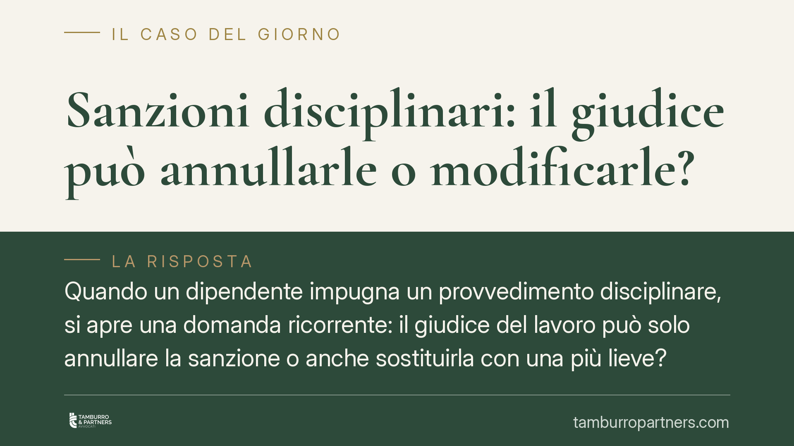

Sanzioni disciplinari: il giudice può annullarle o modificarle?
Quando un dipendente impugna un provvedimento disciplinare, si apre una domanda ricorrente: il giudice del lavoro può solo annullare la sanzione o anche sostituirla con una più lieve? La questione tocca il confine tra controllo giudiziale e potere organizzativo del datore. Vediamo cosa dice la giurisprudenza consolidata e cosa comporta, in pratica, per le parti del rapporto.

Il quadro normativo
Il potere disciplinare del datore di lavoro privato non è libero. L'articolo 2106 del codice civile lo subordina al principio di proporzionalità: la sanzione deve essere commisurata alla gravità dell'inadempimento. L'articolo 7 della Legge 300/1970 (Statuto dei lavoratori) impone poi una procedura precisa — contestazione scritta, diritto di difesa, termini a difesa — a tutela del dipendente.
Sullo sfondo opera l'articolo 41 della Costituzione, che riconosce la libertà di iniziativa economica privata. Da qui discende l'idea, radicata in giurisprudenza, che la scelta organizzativa e gestionale resti in capo all'imprenditore: il giudice ne verifica la legittimità, ma non si sostituisce alle sue valutazioni discrezionali.
Controllo di legittimità e proporzionalità, non sostituzione
La distinzione da tenere a mente è tra due piani diversi.
Da un lato c'è il controllo di legittimità e proporzionalità. Il giudice verifica se la sanzione è stata irrogata nel rispetto della procedura, se il fatto contestato sussiste e se la misura adottata è proporzionata all'infrazione. Se riscontra un vizio, può annullare o dichiarare l'illegittimità del provvedimento.
Dall'altro c'è il cosiddetto potere di sostituzione, cioè la possibilità per il giudice di rimodulare la sanzione, convertendo ad esempio un licenziamento in una sospensione, o riducendo i giorni di sospensione irrogati. Secondo l'orientamento prevalente nel lavoro privato, questo potere è tendenzialmente escluso: il giudice annulla ciò che è sproporzionato, ma non "riscrive" la sanzione al posto del datore.
Va detto con onestà che il tema non è monolitico. Il rapporto tra proporzionalità e tipizzazione contrattuale delle sanzioni — quando cioè il CCNL predetermina quale misura si applica a una data infrazione — resta oggetto di un dibattito giurisprudenziale in evoluzione. In presenza di una graduazione già fissata dal contratto collettivo, i margini di intervento del giudice possono atteggiarsi diversamente. Per questo è prudente diffidare delle formule assolute.
Il discorso cambia nel pubblico impiego contrattualizzato, dove la sanzione è spesso più strettamente tipizzata dalla normativa e dai contratti di comparto, con conseguenze diverse sui poteri del giudice. La distinzione tra settore privato e pubblico va sempre tenuta presente.
Cosa cambia in concreto
Per il dipendente, l'esito dell'impugnazione tende a essere binario. Se il giudice accoglie il ricorso, la sanzione cade e il lavoratore viene rimesso nella situazione precedente (con le conseguenze economiche che ne derivano, specie in caso di sospensione o licenziamento). Se lo respinge, la sanzione resta pienamente efficace: non c'è, di regola, una "via di mezzo" con una misura ridotta disposta dal giudice.
Per il datore di lavoro, questo significa che il margine di errore in fase di irrogazione è stretto. Una sanzione sproporzionata o viziata nella procedura non viene "salvata" dal giudice attraverso una correzione al ribasso: rischia di cadere per intero. Curare la contestazione, la proporzionalità e il rispetto dei termini non è un formalismo, ma la condizione di tenuta del provvedimento.
Attenzione ai termini di impugnazione
Un profilo spesso sottovalutato riguarda i tempi.
Per le sanzioni conservative (richiamo, multa, sospensione) il termine e le modalità di impugnazione sono tipicamente quelli previsti dal CCNL applicabile, che può prevedere passaggi come l'impugnazione in sede sindacale o la richiesta di costituzione del collegio di conciliazione e arbitrato ex art. 7 dello Statuto.
Per il licenziamento, invece, opera l'articolo 6 della Legge 604/1966: impugnazione entro 60 giorni dalla comunicazione, seguita dal deposito del ricorso giudiziale (o dalla comunicazione del tentativo di conciliazione) entro gli ulteriori termini di legge. Lasciar decorrere questi termini preclude la tutela, a prescindere dal merito.
Cosa fare in concreto
- Verifica la procedura: controlla che la contestazione sia stata scritta, specifica e tempestiva, e che siano stati rispettati i termini a difesa.
- Valuta la proporzionalità: confronta la sanzione con la gravità effettiva del fatto e con la graduazione prevista dal CCNL.
- Rispetta i termini: individua subito il termine applicabile (CCNL per le sanzioni conservative, art. 6 L. 604/1966 per il licenziamento) e non lasciarlo scadere.
- Conserva la documentazione: raccogli lettere, verbali, memorie difensive e ogni prova utile a ricostruire i fatti.
- È opportuna una valutazione preventiva dei profili procedurali e di merito, distinguendo i rimedi disponibili secondo il tipo di sanzione.
---
Contributo informativo a cura di Tamburro & Partners - Avv. Giuseppe Tamburro. Non costituisce parere legale.
Ogni storia di lavoro ha i suoi tempi.
Se gestisci HR e vuoi un confronto su contenzioso, ispezioni o licenziamenti, scrivi allo studio. Ti rispondiamo entro un giorno lavorativo.